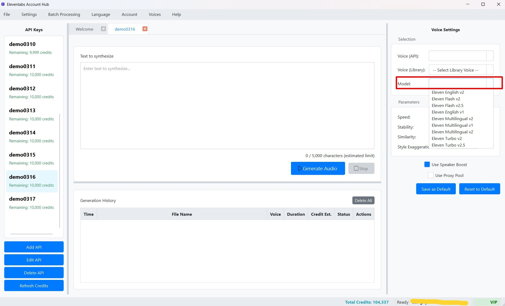

Tạo Giọng nói Cơ bản với Text-to-Speech (TTS)
Chức năng cốt lõi của ElevenLabs Account Hub là giúp bạn dễ dàng chuyển đổi văn bản thành giọng nói (Text-to-Speech) sử dụng các Khóa API ElevenLabs của mình. Dưới đây là các bước cơ bản để tạo ra một tệp âm thanh:
1. Chọn Khóa API để Sử dụng
Mọi thao tác TTS đều được thực hiện thông qua một Khóa API cụ thể. Vì vậy, bước đầu tiên là chọn Khóa API bạn muốn dùng:
- Nhìn vào Cột Trái (Danh sách Khóa API).
- Nhấp chuột vào tên của Khóa API bạn muốn sử dụng. Ví dụ: "TaiKhoanChinh", "AccClone01".
- Khi một Khóa API được chọn:
- Một tab làm việc mới sẽ được mở (hoặc tab đã có cho khóa đó sẽ được kích hoạt) ở Cột Giữa (Không gian Làm việc TTS). Tên của tab này sẽ trùng với tên Khóa API bạn chọn.
- Bảng Cài đặt (Settings Panel) ở Cột Phải sẽ tự động tải và hiển thị các cài đặt TTS mặc định (hoặc đã lưu trước đó) cho Khóa API này.
 (Hình ảnh: Chọn một Khóa API từ danh sách bên trái, tab tương ứng được mở ở giữa)
(Hình ảnh: Chọn một Khóa API từ danh sách bên trái, tab tương ứng được mở ở giữa)
2. Nhập Văn bản cần Chuyển đổi
Trong tab TTS đang hoạt động (Cột Giữa), bạn sẽ thấy một khu vực lớn để nhập văn bản:
- Nhập hoặc dán đoạn văn bản bạn muốn chuyển đổi thành giọng nói vào ô có nhãn "Text to synthesize" (Văn bản để tổng hợp).
- Khi bạn nhập, bộ đếm ký tự ở ngay phía dưới ô nhập liệu sẽ cập nhật. Ví dụ: "
150 / 5.000 characters (estimated limit)".- Số đầu tiên (
150) là số ký tự bạn đã nhập. - Số thứ hai (
5.000) là giới hạn ký tự ước tính cho một lần tạo TTS với mô hình hiện tại. Giới hạn này do ElevenLabs quy định và có thể thay đổi. - Lưu ý quan trọng về bộ đếm: Một số mô hình TTS của ElevenLabs (ví dụ: các mô hình "Turbo" hoặc "Flash") có thể tính 2 ký tự văn bản gốc chỉ bằng 1 ký tự sử dụng. Nếu bạn chọn một trong các mô hình này trong Bảng Cài đặt, bộ đếm ký tự sẽ tự động hiển thị số ký tự đã được điều chỉnh (chia đôi và làm tròn lên), kèm theo ghi chú "(adjusted for [tên mô hình])". Điều này giúp bạn ước tính chính xác hơn lượng tín dụng sẽ bị trừ.
- Số đầu tiên (
3. Chọn Giọng nói và Mô hình (trong Bảng Cài đặt - Cột Phải)
Sau khi đã có văn bản, bạn cần chọn giọng nói và mô hình AI sẽ được sử dụng. Các tùy chọn này nằm trong Bảng Cài đặt (Settings Panel) ở Cột Phải:
- Chọn Giọng nói (Voice):
- Từ danh sách thả xuống "Voice": Danh sách này chứa các giọng nói có sẵn từ tài khoản ElevenLabs của Khóa API đang hoạt động (bao gồm các giọng nói mặc định của ElevenLabs và các giọng nói trong "My Voices" của bạn trên trang web ElevenLabs).
- Hoặc, từ danh sách thả xuống "Library Voice": Danh sách này chứa các giọng nói bạn đã lưu vào Thư viện Cục bộ của phần mềm (xem Voice Library và Sử dụng Giọng nói Thư viện).
- Lưu ý: Bạn chỉ có thể chọn một nguồn giọng nói tại một thời điểm. Nếu bạn chọn một "Library Voice", lựa chọn "Voice" (API) sẽ bị xóa và ngược lại.
- Chọn Mô hình (Model):
- Từ danh sách thả xuống "Model", chọn mô hình AI bạn muốn sử dụng. Ví dụ:
eleven_multilingual_v2: Hỗ trợ nhiều ngôn ngữ, chất lượng tốt.eleven_english_v1: Tối ưu cho tiếng Anh.eleven_turbo_v2/eleven_flash_v2: Các mô hình nhanh hơn, có thể có cách tính ký tự khác.
- Lựa chọn mô hình có thể ảnh hưởng đến ngôn ngữ được hỗ trợ, chất lượng giọng nói và tốc độ tạo.
- Từ danh sách thả xuống "Model", chọn mô hình AI bạn muốn sử dụng. Ví dụ:
Các tham số khác như Tốc độ, Độ ổn định, v.v., sẽ được đề cập chi tiết trong mục Tùy chỉnh Tham số TTS. Đối với tạo giọng nói cơ bản, bạn có thể giữ nguyên các giá trị mặc định của chúng.
 (Hình ảnh: Lựa chọn Giọng nói và Mô hình trong Bảng Cài đặt)4. Bắt đầu Tạo Giọng nói
- Sau khi đã nhập văn bản và chọn các cài đặt cơ bản (Giọng nói, Mô hình), quay lại tab TTS ở Cột Giữa.
- Nhấn nút "Generate Audio".
- Quá trình tạo giọng nói sẽ bắt đầu:
- Nút "Generate Audio" sẽ chuyển thành "Generating..." và tạm thời bị vô hiệu hóa.
- Nút "Stop" sẽ được kích hoạt, cho phép bạn hủy bỏ quá trình nếu muốn.
- Thanh tiến trình (Progress Bar) sẽ xuất hiện và chạy ở chế độ không xác định (indeterminate mode), cho biết phần mềm đang làm việc.
- Phần mềm sẽ gửi yêu cầu đến máy chủ của ElevenLabs. Thời gian xử lý phụ thuộc vào độ dài văn bản, mô hình được chọn, và tải hiện tại của máy chủ ElevenLabs.
- Kết quả:
- Thành công:
- Tệp âm thanh (thường là .mp3) sẽ được tự động lưu vào thư mục đầu ra mặc định mà bạn đã cấu hình (xem Thư mục Lưu trữ Mặc định).
- Một mục mới sẽ được thêm vào bảng Lịch sử TTS ở phía dưới của tab, ghi lại thông tin về lần tạo này (thời gian, tên tệp, giọng nói đã dùng, thời lượng ước tính, trạng thái "Thành công", và số ký tự đã sử dụng).
- Thông tin tín dụng của Khóa API sẽ được cập nhật.
- Thất bại:
- Nếu có lỗi xảy ra (ví dụ: Khóa API không hợp lệ, hết tín dụng, lỗi kết nối mạng, lỗi từ máy chủ ElevenLabs), một hộp thoại thông báo lỗi chi tiết sẽ xuất hiện.
- Một mục lịch sử với trạng thái "Lỗi" cũng có thể được thêm vào bảng Lịch sử TTS.
- Thành công:
- Sau khi quá trình hoàn tất (dù thành công hay thất bại), các nút "Generate Audio" và "Stop" sẽ trở lại trạng thái ban đầu, sẵn sàng cho lần tạo tiếp theo.
5. Nghe lại và Quản lý Tệp Âm thanh
Sau khi giọng nói được tạo thành công:
- Bạn có thể tìm thấy tệp âm thanh .mp3 đã được lưu trong thư mục đầu ra mà bạn đã cấu hình trong phần Cài đặt của ứng dụng.
- Trong bảng Lịch sử TTS của tab hiện tại, tìm đến mục vừa tạo. Nhấn vào nút "Mở thư mục" ở cột "Actions" để mở nhanh thư mục chứa tệp âm thanh đó trên máy tính của bạn.
Từ đây, bạn có thể nghe lại tệp âm thanh, sao chép, di chuyển hoặc sử dụng cho các mục đích của mình.